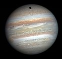

MercuryMercury is the smallest and innermost planet in the Solar System. Its orbital period around the Sun of 87.97 days is the shortest of all the planets in the Solar System. It is named after the Roman deity Mercury, the messenger of the gods. Like Venus, Mercury orbits the Sun within Earth's orbit as an inferior planet, and never exceeds 28° away from the Sun. When viewed from Earth, this proximity to the Sun means the planet can only be seen near the western or eastern horizon during the early evening or early morning. At this time it may appear as a bright star-like object, but is often far more difficult to observe than Venus. The planet telescopically displays the complete range of phases, similar to Venus and the Moon, as it moves in its inner orbit relative to Earth, which reoccurs over the so-called synodic period approximately every 116 days. |
VenusVenus is the second planet from the Sun, orbiting it every 224.7 Earth days. It has the longest rotation period (243 days) of any planet in the Solar System and rotates in the opposite direction to most other planets (meaning the Sun would rise in the west and set in the east). It does not have any natural satellites. It is named after the Roman goddess of love and beauty. It is the second-brightest natural object in the night sky after the Moon, reaching an apparent magnitude of −4.6 – bright enough to cast shadows at night and, rarely, visible to the naked eye in broad daylight. Orbiting within Earth's orbit, Venus is an inferior planet and never appears to venture far from the Sun; its maximum angular distance from the Sun (elongation) is 47.8°. |
EarthEarth is the third planet from the Sun and the only astronomical object known to harbor life. According to radiometric dating and other sources of evidence, Earth formed over 4.5 billion years ago. Earth's gravity interacts with other objects in space, especially the Sun and the Moon, Earth's only natural satellite. Earth revolves around the Sun in 365.26 days, a period known as an Earth year. During this time, Earth rotates about its axis about 366.26 times. Earth's axis of rotation is tilted with respect to its orbital plane, producing seasons on Earth. The gravitational interaction between Earth and the Moon causes ocean tides, stabilizes Earth's orientation on its axis, and gradually slows its rotation. Earth is the densest planet in the Solar System and the largest of the four terrestrial planets. |
MarsMars is the fourth planet from the Sun and the second-smallest planet in the Solar System after Mercury. In English, Mars carries a name of the Roman god of war, and is often referred to as the "Red Planet" because the reddish iron oxide prevalent on its surface gives it a reddish appearance that is distinctive among the astronomical bodies visible to the naked eye. Mars is a terrestrial planet with a thin atmosphere, having surface features reminiscent both of the impact craters of the Moon and the valleys, deserts, and polar ice caps of Earth. |
|  | JupiterJupiter is the fifth planet from the Sun and the largest in the Solar System. It is a giant planet with a mass one-thousandth that of the Sun, but two-and-a-half times that of all the other planets in the Solar System combined. Jupiter and Saturn are gas giants; the other two giant planets, Uranus and Neptune are ice giants. Jupiter has been known to astronomers since antiquity. The Romans named it after their god Jupiter. When viewed from Earth, Jupiter can reach an apparent magnitude of −2.94, bright enough for its reflected light to cast shadows, and making it on average the third-brightest object in the night sky after the Moon and Venus. |
SaturnSaturn is the sixth planet from the Sun and the second-largest in the Solar System, after Jupiter. It is a gas giant with an average radius about nine times that of Earth. It has only one-eighth the average density of Earth, but with its larger volume Saturn is over 95 times more massive. Saturn is named after the Roman god of agriculture; its astronomical symbol (♄) represents the god's sickle.The planet's most famous feature is its prominent ring system that is composed mostly of ice particles, with a smaller amount of rocky debris and dust. At least 62 moons are known to orbit Saturn, of which 53 are officially named. This does not include the hundreds of moonlets in the rings. Titan, Saturn's largest moon, and the second-largest in the Solar System, is larger than the planet Mercury, although less massive, and is the only moon in the Solar System to have a substantial atmosphere. |
UranusUranus is the seventh planet from the Sun. It has the third-largest planetary radius and fourth-largest planetary mass in the Solar System. Uranus is similar in composition to Neptune, and both have different bulk chemical composition from that of the larger gas giants Jupiter and Saturn. For this reason, scientists often classify Uranus and Neptune as "ice giants" to distinguish them from the gas giants. Uranus's atmosphere is similar to Jupiter's and Saturn's in its primary composition of hydrogen and helium, but it contains more "ices" such as water, ammonia, and methane, along with traces of other hydrocarbons.It is the coldest planetary atmosphere in the Solar System, with a minimum temperature of 49 K (−224 °C; −371 °F), and has a complex, layered cloud structure with water thought to make up the lowest clouds and methane the uppermost layer of clouds. The interior of Uranus is mainly composed of ices and rock. |
NeptuneNeptune is the eighth and farthest known planet from the Sun in the Solar System. In the Solar System, it is the fourth-largest planet by diameter, the third-most-massive planet, and the densest giant planet. Neptune is 17 times the mass of Earth and is slightly more massive than its near-twin Uranus, which is 15 times the mass of Earth and slightly larger than Neptune. Neptune orbits the Sun once every 164.8 years at an average distance of 30.1 AU (4.5 billion km). It is named after the Roman god of the sea and has the astronomical symbol ♆, a stylised version of the god Neptune's trident.Like Jupiter and Saturn, Neptune's atmosphere is composed primarily of hydrogen and helium, along with traces of hydrocarbons and possibly nitrogen, but it contains a higher proportion of "ices" such as water, ammonia, and methane. However, its interior, like that of Uranus, is primarily composed of ices and rock, which is why Uranus and Neptune are normally considered "ice giants" to emphasise this distinction.Traces of methane in the outermost regions in part account for the planet's blue appearance. |